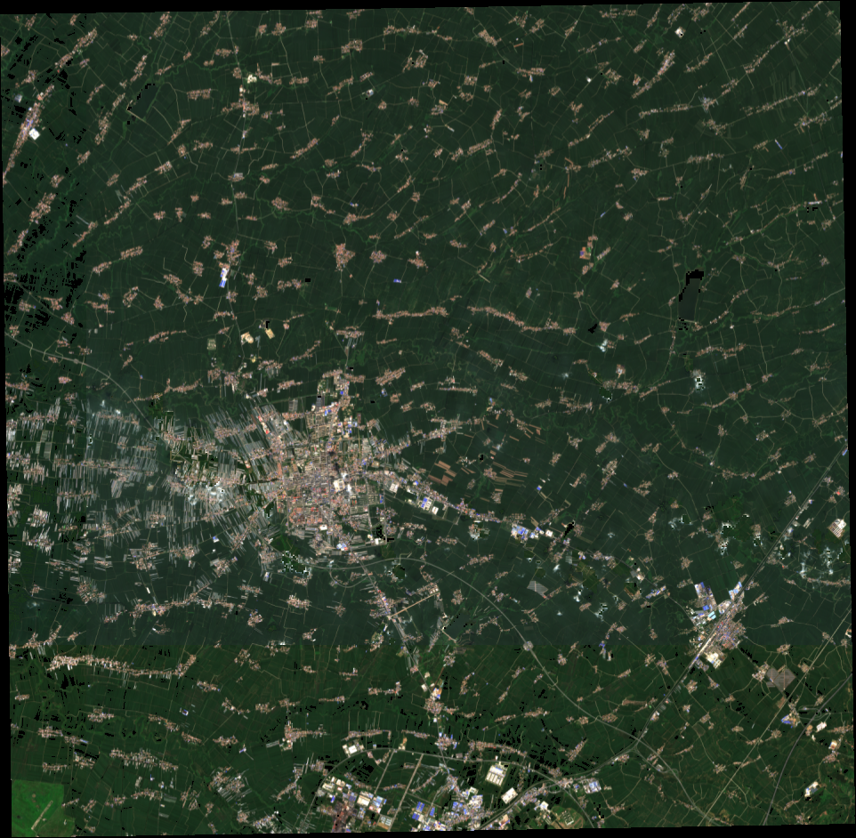

十年表层保留差
同一降水序列下，传统耕作剩余 272.5 mm，梨树模式剩余 297.8 mm（初始假设 300 mm）。
梨树样区 788 km² 的空天地数字孪生。从卫星地表到两米深的地下碳库，用可追溯的开放数据推演保护性耕作的价值——并诚实标出模型的边界。
结论先行，证据随后。点击卡片底部按钮，三维场景会切换到对应的图层、年份与视角。
同一降水序列下，传统耕作剩余 272.5 mm，梨树模式剩余 297.8 mm（初始假设 300 mm）。
2–5° 坡面只占 17.7% 面积，却贡献近一半模型侵蚀量；陡坡虽强但面积太小。
1–2 m 深层浓度只有表层的 1/4，但层厚大，贡献两米碳库的三分之一以上。
夏季 NDVI 与表层 SOC 几乎无相关。遥感绿度不能替代地下肥力监测。
320×314 真实地形网格、Sentinel-2 真彩色纹理、10 m 等高线与 100 条汇流路由。拖动旋转、滚轮缩放、点击地表取一根虚拟土芯。
EPSG:32651 · 6 层 / 0–200 cm · 2015–2024 降水驱动 · 汇流粒子为累积栅格锚点上的示意动画，非水动力流速
SoilGrids 2.0 六层预测，经容重、层厚与砾石校正积分为碳储量。注意区分「空间变异」与「预测不确定性」——它们回答的是不同问题。
RUSLE 坡面代理模型，2015–2024 月降水驱动。以下判断用于空间优先级筛查，不是实测流失量。
RUSLE 中 A = R·K·LS·C·P。地形与土壤不变，调整覆盖管理 C、水保措施 P 与降雨侵蚀力 R，实时看到样区年均侵蚀的响应。
分位数用于识别偏态与尾部；30 m 重采样像元不是独立观测样本，重采样也不会提高原生观测精度。
| 指标 | 分布形态 | P05 | P25 | 中位数 | P75 | P95 | 单位 |
|---|

2025 夏季 Sentinel-2 地表反射率，多日期瓦片拼接。不能从单次影像推断长期保护效果。
SoilGrids 约 250 m 原生模型。30 m 重采样不会创造新的观测。碳储量 = SOC × 容重 × 层厚 × 0.1 × (1 − 砾石体积分数)。
固定 C/P 与月降水 R 函数，未经本地校准；不含沟蚀、冻融、风蚀和沉积。
地形夸张可调，地下深度 ×1800，侵蚀形变 ×3000 且上限 100 mm；六层展开等间距仅便于比较，非真实层厚。
土壤储量不等于固碳增量；预测分位不等于观测变化。
实际推广效果，需要定位监测来校准。